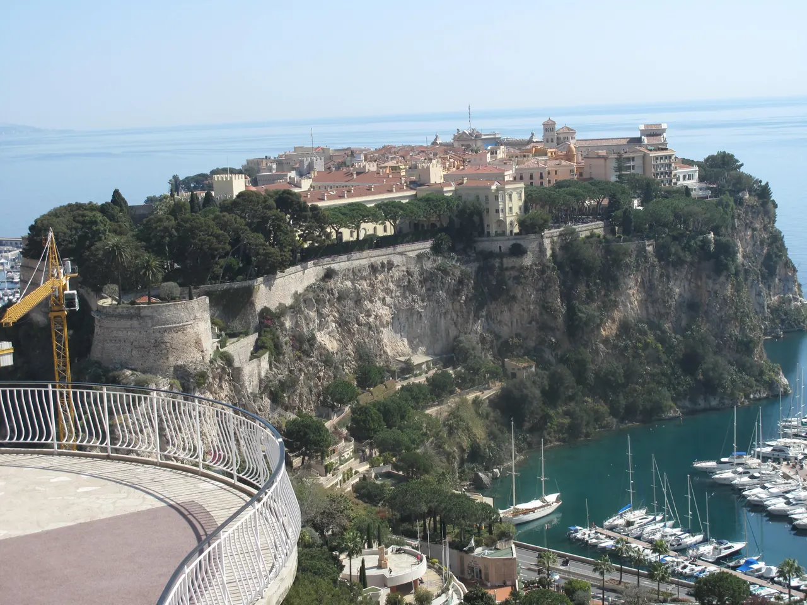
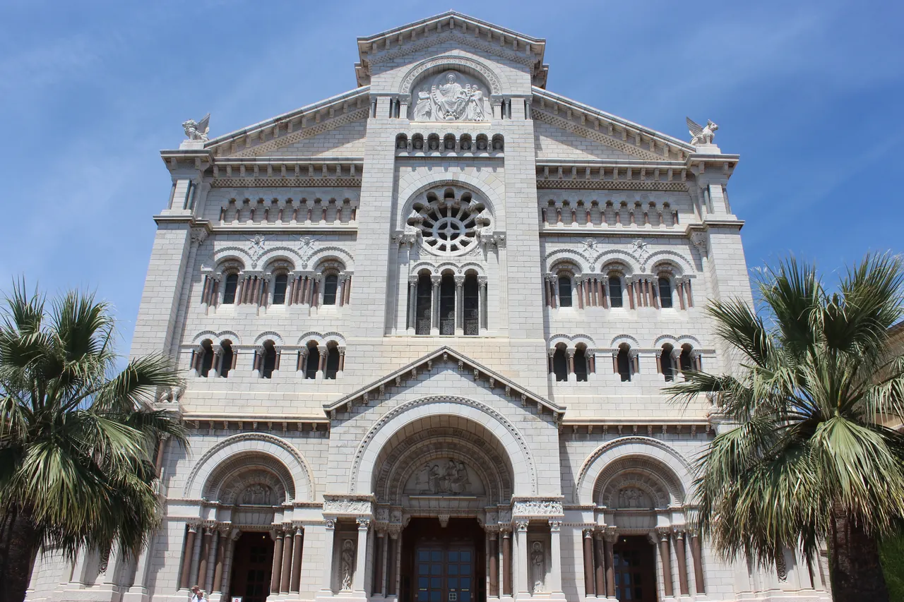
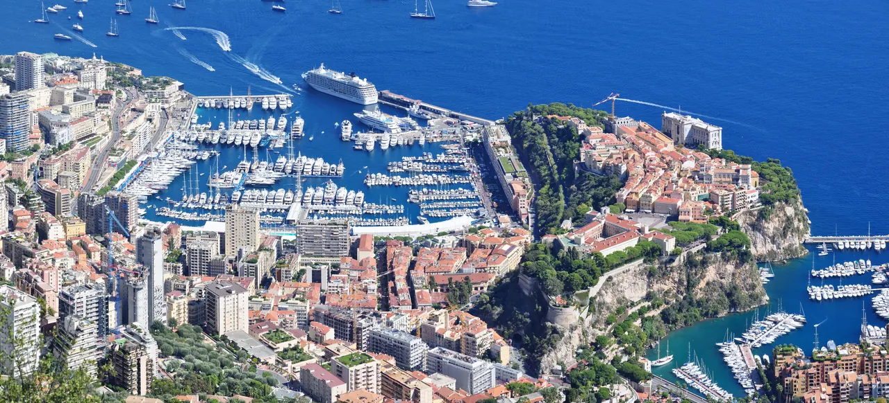

{kind=link}
.jpg){kind=link}
{kind=link}
관광·미술관
Nous avons déjà des billets.
이미 표가 있습니다.
누 자봉 데자 데 비예

지중해 바다를 향해 해발 60m로 수직 돌출된 거대한 석회암 바위 절벽 위에 자리 잡은 모나코의 발상지이자 역사 지구(Monaco-Ville)다.
1297년 프란체스코 그리말디(Francesco Grimaldi)가 수도사로 변장해 성문을 열고 요새를 탈취한 이래 700년 넘게 그리말디 가문이 다스려 온 모나코 대공궁(Palais Princier)이 자리 잡고 있으며, 대공궁 광장에서는 매일 오전 11시 55분 전통 위병 교대식(Changement de la Garde)이 거행된다.
바위 위 좁고 정갈한 중세 골목길을 따라 걷다 보면, 배우 그레이스 켈리(Grace Kelly, 레니에 3세 대공비)의 대리석 묘소가 안치된 모나코 대성당(Cathédrale de Monaco)과 절벽 끝에 세워진 웅장한 해양학 박물관(Musée Océanographique)이 나타난다.
몬테카를로의 과시적인 부와 현대적 화려함과 극적인 대비를 이루는 고요하고 품격 있는 역사 지구다. 오전 10:30경에 올라 대성당과 성 니콜라 정원을 둘러보고 11:55 대공궁 위병 교대식을 관람한 뒤, 랑프 마요르(Rampe Major) 돌계단을 따라 에르퀼 항구로 내려오는 90~120분 코스가 모나코 여행의 핵심 축이다.
| 운영시간 | 골목은 시간 제한 없음. 대공궁 9월 10:00~18:00(매표 17:00 마감). 근위병 교대식은 매일 11:55 정각 Place du Palais |
|---|---|
| 휴무 | 구시가지 골목은 연중 개방. 대공궁(Palais Princier) 견학은 2026년 10/15까지 운영이며 9/25는 16시 조기 폐장, 10/1~3·10/7 휴관 |
| 예약 | 골목 산책은 예약 불필요. 대공궁은 온라인 사전 구매 가능(성인 10유로, 6~17세·학생 5유로) |
| 소요시간 | 90–120분 재확인 |
| 메모 | 위병 교대식 매일 11:55 (Place du Palais). Marché de la Condamine는 2026 전면 리노베이션 폐쇄, 2027년 초 재개장 목표 |
| 항목 | 상세 정보 |
|---|---|
| 위치 | Monaco-Ville (Le Rocher), 98000 Monaco |
| 운영/요금 | 바위 마을 및 광장 자유 산책 / 무료 |
| 위병 교대식 | 매일 오전 11:55 정시 시작 (대공궁 광장 / 무료 관람) |
| 대성당 운영 | 매일 09:00–18:00 (종교 행사 시 제한 / 무료 입장) |
| 접근/엘리베이터 | 기차역에서 지하 공공 엘리베이터 및 무빙워크를 타고 Port Hercule 방면으로 이동 후 계단/엘리베이터 연계 |
🧭 이동 팁: Monaco-Monte-Carlo 기차역은 지하 거대 복합시설입니다. 'Sortie Port / Monaco-Ville' 표지판을 따라 나와 공공 엘리베이터를 이용하면 가파른 언덕길을 크게 우회하여 수월하게 오를 수 있습니다.
1817년 창설된 카라비니에 뒤 프랭스(Compagnie des Carabiniers du Prince) 근위대가 주관하는 의식이다. 여름철에는 순백의 정복을 입고 군악대의 북소리에 맞춰 일사불란한 총기 제식 훈련과 열쇠 인계의식을 거행한다.
💡 관람 팁: 좋은 시야를 확보하려면 11:40까지 대공궁 광장(Place du Palais) 중앙 차단선 앞쪽에 자리 잡는 것이 좋습니다.
1875년 로마네스크-비잔틴 양식의 백색 석회암으로 지어진 성당이다. 제단 뒤편 대공 가문 묘역에는 1956년 세기의 결혼식으로 전 세계의 이목을 끌었던 할리우드 스타이자 대공비였던 그레이스 켈리(Princess Grace, 1982년 서거)와 레니에 3세의 묘비가 나란히 안치되어 있어 수많은 추모객의 헌화가 이어진다.


Nous avons déjà des billets.
이미 표가 있습니다.
누 자봉 데자 데 비예
On peut prendre des photos ?
사진 찍어도 되나요?
옹 푀 프랑드르 데 포토
Où commence la visite ?
관람은 어디서 시작하나요?
우 코망스 라 비지트

국제영화제의 상징 크루아제트 대로와 호화 요트 항구, 그리고 11세기 중세 어촌의 원형 르 쉬케 언덕이 공존하는 코트다쥐르의 영화 도시.

해발 92m 바위 절벽 위에서 천사의 만(Baie des Anges)과 구시가지, 림피아 항구를 360도 파노라마로 굽어보는 니스 최고의 천연 전망 공원.

지중해 꽃과 프로방스 제철 식재료, 그리고 갓 구워낸 니스 전통 소카(Socca)를 맛보는 유서 깊은 야외 시장 광장.

크루아제트의 화려함 뒤에 숨겨진 11세기 옛 어촌의 가파른 돌계단 골목과 정상 성당에서 바라보는 칸 만의 파노라마.

칸 주민들의 부엌이자 지중해 해산물, 프로방스 과일, 꽃, 치즈가 가득한 1934년 유서 깊은 철골 재래시장.

관광객 중심의 쿠르 살레야와 달리 니스 현지 주민들의 진짜 장바구니 물가와 일상을 만나는 대형 야외 농산물 시장.